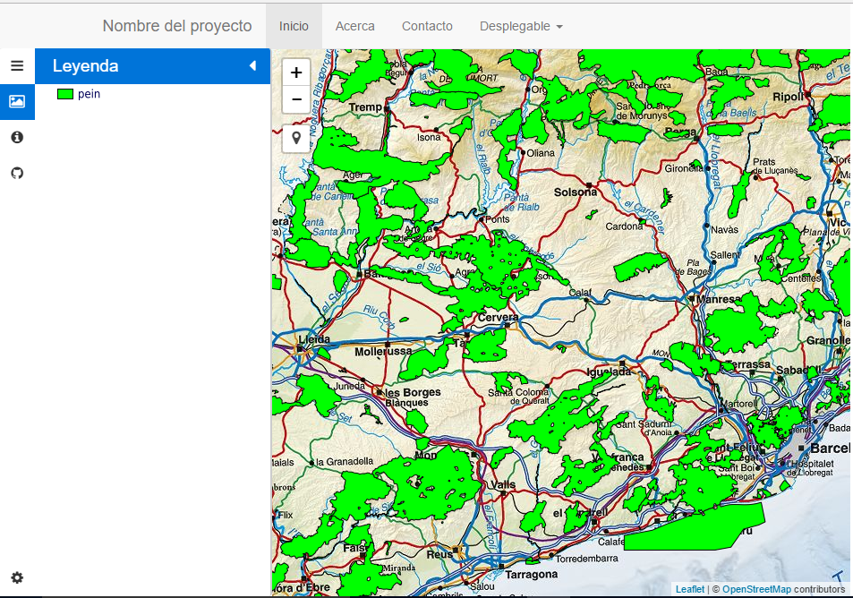

Note
| Fecha | Autores |
|---|---|
| 14 Febrero 2017 |
|
©2017 Wladimir Szczerban
Excepto donde quede reflejado de otra manera, la presente documentación se halla bajo licencia: Creative Commons (Creative Commons - Attribution - Share Alike: http://creativecommons.org/licenses/by-sa/3.0/deed.es)
Agregaremos a nuestro mapa la leyenda de las capas WMS que estén activas. La leyenda de las capas las mostraremos en una de las pestañas de nuestra barra lateral.
Registrar los eventos de agregar y eliminar capa a nuestro mapa. Para ello escribiremos lo siguiente justo debajo de la declaración del mapa.
map.on('layeradd',function(layer){
addLeyenda(layer.layer);
});
map.on('layerremove',function(layer){
removeLeyenda(layer.layer);
});
Definir las funciones addLeyenda y removeLeyenda. Al final de nuestro apartado de javascript escribiremos:
function addLeyenda(layer){
if( layer instanceof L.TileLayer.WMS ){
var container = document.getElementById("control-leyenda");
var divleyenda = L.DomUtil.create('div','div-image-leyenda', container);
divleyenda.id = '_leaflet_id_'+layer._leaflet_id;
var imgleyenda = L.DomUtil.create('img','image-leyenda', divleyenda);
imgleyenda.src = layer._url+'&VERSION=1.3.0&SERVICE=WMS&REQUEST=GetLegendGraphic&SLD_VERSION=1.1.0&LAYER='+layer.options.layers+'&FORMAT=image/png&STYLE=default';
}
}
function removeLeyenda(layer){
var divleyenda = L.DomUtil.get('_leaflet_id_'+layer._leaflet_id);
document.getElementById("control-leyenda").removeChild(divleyenda);
}
Abrir el navegador.
http://localhost:81/visor/movil.html
Ver que nos aparece la leyenda en el menú lateral
